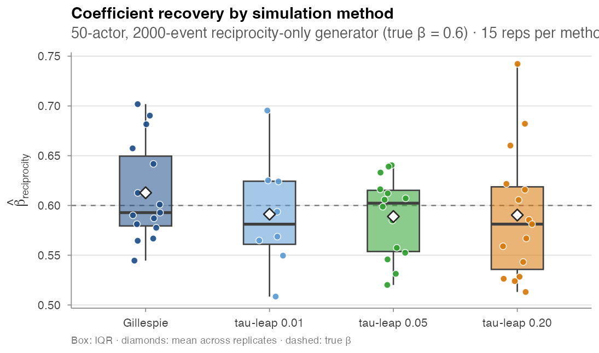
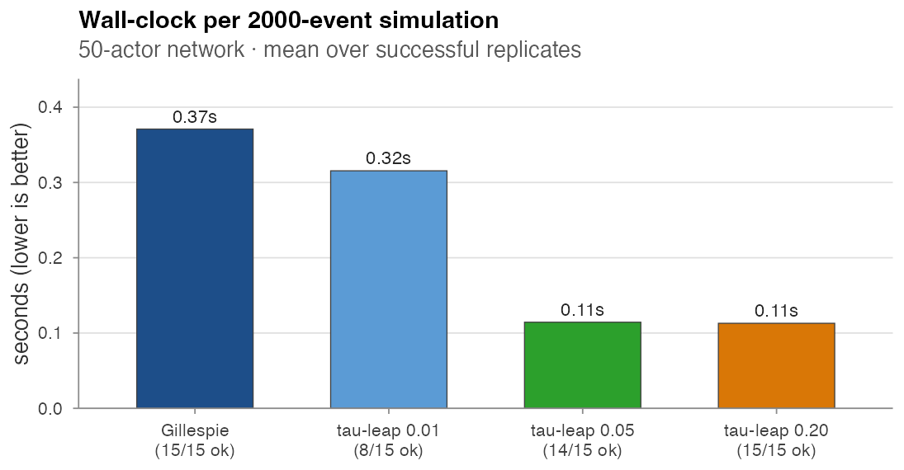

Simulation
amore exposes a single front-door simulator,
simulate_relational_events(), that composes five mechanisms
on top of an event-by-event inner loop. Two algorithms drive the loop:
Gillespie (exact, per-event) and
τ-leap (approximate, fixed time slices). The two are
compared at the bottom of this page.
The five mechanisms
- Minimal Gillespie — homogeneous baseline rate over all admissible dyads.
- Per-dyad contribution logits — a static S × R matrix of log-rate adjustments (e.g. inter-state distances, role similarities).
- Exogenous sender / receiver covariates — per-actor numeric tables with their effect vectors.
- Endogenous statistics — any subset of the catalogue listed in Endogenous catalogue, updated after each fired event.
- Time-varying global covariates — piecewise-constant modifiers tied to an interval grid, advanced with a boundary-aware Gillespie scheme.
Per-feature argument map
| Feature | Arguments | Notes |
|---|---|---|
| Dyad-level contribution | contribution_logits |
S × R matrix of log-rate contributions |
| Static sender / receiver |
sender_covariates, sender_effects,
receiver_covariates, receiver_effects
|
per-actor tables; effects required |
| Endogenous |
endogenous_stats, endogenous_effects
|
any stat from the catalogue |
| Exp-decay half-life | half_life |
required when any *_exp_decay stat is active |
| Time-varying global |
global_covariates, global_effects
|
piecewise constant on time_start intervals |
| Case–control output | n_controls |
≥ 1 activates stratified output |
| Algorithm |
method, tau
|
"gillespie" (exact) or "tau_leap"
|
| Risk-set rule | risk |
"standard" or "remove"
|
Idiomatic calls
Minimal Gillespie
ev <- simulate_relational_events(
n_events = 500,
senders = LETTERS[1:6],
receivers = LETTERS[1:6],
baseline_rate = 1)Endogenous structure
ev <- simulate_relational_events(
n_events = 1000,
senders = letters[1:10],
receivers = letters[1:10],
endogenous_stats = c("reciprocity_count", "transitivity_count"),
endogenous_effects = c(reciprocity_count = 0.4,
transitivity_count = 0.3))Case–control output
Set n_controls = k to emit a stratified case–control
table directly: each fired event becomes one case row paired
with k control rows drawn from the non-event risk
set at that moment, sharing a stratum id.
cc <- simulate_relational_events(
n_events = 1200,
senders = paste0("a", 1:20),
receivers = paste0("a", 1:20),
endogenous_stats = "reciprocity_count",
endogenous_effects = c(reciprocity_count = 0.6),
n_controls = 1)Time-varying global covariates
g <- data.frame(time_start = c(0, 2, 5),
weekend = c(0, 1, 0))
ev <- simulate_relational_events(
n_events = 800,
senders = LETTERS[1:8],
receivers = LETTERS[1:8],
baseline_rate = 1,
global_covariates = g,
global_effects = c(weekend = -1.5))A boundary-aware Gillespie scheme advances the clock across each
time_start boundary without artificially recording or
losing events.
Gillespie vs τ-leap
Same scenario in both algorithms: 50-actor network, 2,000 events,
reciprocity at β = 0.6, one control per case, 15 replicates per method.
For each replicate we record the wall-clock of the simulator call and
the recovered β̂ from
clogit(event ~ reciprocity_count + strata(stratum)).
Statistical equivalence
| Method | β̂ mean | β̂ SD | wall-clock (s) | successes / 15 |
|---|---|---|---|---|
| Gillespie | 0.613 | 0.050 | 0.37 | 15 |
| τ-leap @ τ = 0.01 | 0.591 | 0.057 | 0.32 | 8 |
| τ-leap @ τ = 0.05 | 0.589 | 0.041 | 0.11 | 14 |
| τ-leap @ τ = 0.20 | 0.590 | 0.066 | 0.11 | 15 |
On the successful replicates, all four methods recover β within ~0.02 of the truth (Gillespie’s mean of 0.613 sits slightly above, the τ-leap means slightly below). At this scale the differences are within Monte Carlo noise. τ-leap with τ ≥ 0.05 is statistically equivalent to Gillespie on the reciprocity-only generator while running ≈ 3× faster. τ = 0.01 is too small for this regime — only 8 of 15 runs completed within a 30 s timeout budget.

Wall-clock cost
τ-leap at τ ≥ 0.05 runs about 3× faster than Gillespie at 50 actors. The crossover grows with the actor universe: in the full scaling sweep (Validation experiments / E3), τ-leap is 20×–70× faster than Gillespie at 100 actors.

Driver: paper/wiki/experiments/sim_methods.R.
When to pick which
| Use Gillespie when | Use τ-leap when |
|---|---|
| ≤ ~30 actors | ≥ ~50 actors |
| You need every event to react to every prior event | Bias from intra-step reactions is acceptable |
| τ-leap returns “no risk dyads” failures (small / dense regimes) | Wall-clock matters and you can verify τ via a small Gillespie run |
A 15-actor sweep on this same scenario was noticeably unstable under τ-leap (timeouts and silent failures); the comparison above uses 50 actors, where τ-leap is well-behaved. Treat τ as a tunable bias / cost knob and validate it once at the start of each project.
Related pages
- Validation experiments — the full wall-clock scaling grid (4 × 5 × 2) and parity tests.
-
Estimation — how to use the
case-control output produced by
n_controls ≥ 1.